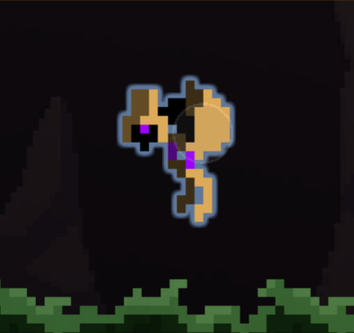
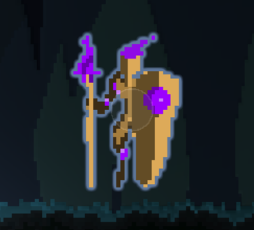
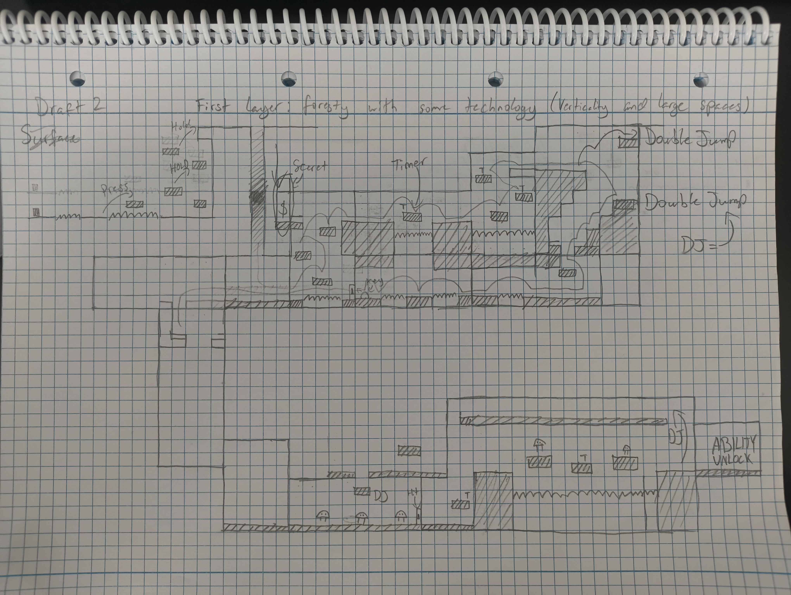
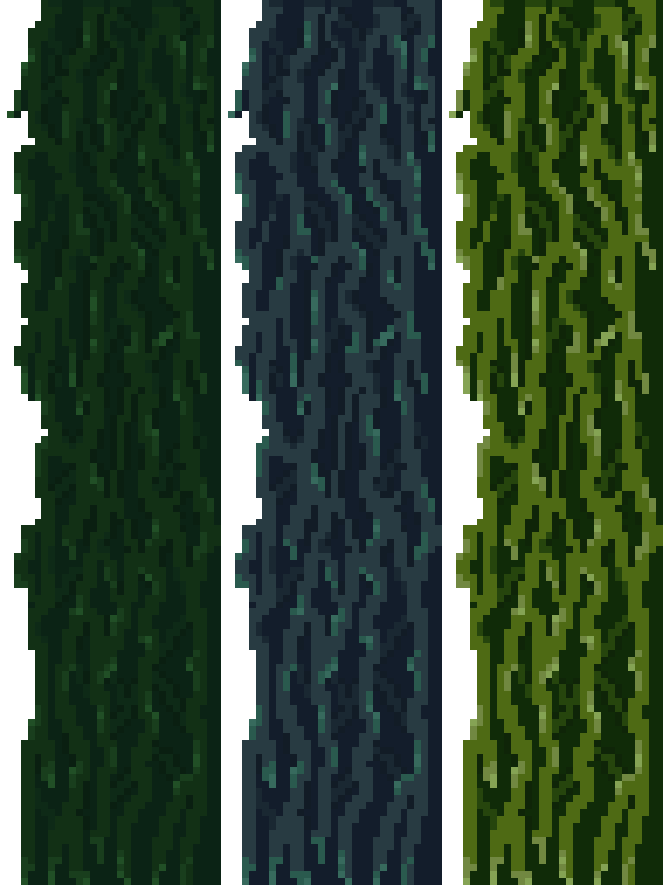
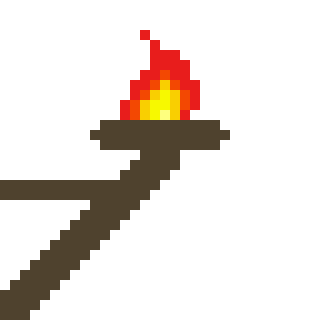

Quick Info
Click to play on Itch.io Click to access GDDPlatform: Windows
Duration: 5 months
Team Size: 5
Role:
- Level Designer
- Lead Audio
- Artist
- Programmer
- Cutscene Editor
Platform: Windows
Duration: 5 months
Team Size: 5
Role:
Other Half is a 2d co-op metroidvania where Vesper, a shaman, and N30, a robot, explore a planet’s underground world, face off against monsters, and unlock abilities to reach the planet's heart and save the world. All while sharing the same body...
Made for a semester project that revolves around the theme “stronger together”, Other Half has two players controlling the same avatar on the screen, where they will need to coordinate their actions by working together.
Regarding design, I focused my efforts on level design as well as creating the GDD (can be accessed via the Quick Info section). The goal for the game’s design was to create an experience that felt intense, where the players had to think quickly and be efficient with their communication. Another goal was to encourage off-track play.
To facilitate the intense experience, I designed three enemies of varying difficulty to ease players into the challenges that come with combat. Furthermore, I included disappearing platforms to have players think quickly when moving.




As for off-track play, the level is created with optional routes the player can take where they can discover secret areas that reward them with lore.



To enforce the story of two characters from different cultures, each of the two main characters have their own instrument. Vesper is personified by the flute/clarinet, slightly panned to the left. Meanwhile N30 is personified by a synth, slightly panned to the right.
Furthermore, the goal for the music was to sell this emotion of fantasy, mystery, and otherworldly. Because of this, I conducted modal mixture, which is when the music shifts from one harmonic mode to another. In the level song, it transitions between Dorian, Lydian, and Aeolian mode, creating an otherworldly feel to the song.
Most of the sound effects were made by recording foleys in my room and post-processing. For example, the dash sound effect was made by swinging a coat hanger.
Others were made by post-processing my vocals (i.e. the monster’s hit and death sound effects).
Lastly, some sound effects were made by layering instruments, sound effects, as well as modulating speed (i.e. the “ability unlock” sound effect).
This opportunity taught me to embrace spontaneity when it comes to making sound effects as well as use real life objects to add richness.
I was not meant to be a programmer, but I created the game’s base jump script as well as the camera script that stops camera damping when the player falls. This is to help the player see what’s directly beneath them while falling and if they need to course correct.


Despite not being an artist, I ended up helping out with making a few props as well as animating. I created platforms, torches, as well as the breakable walls in the game. This opportunity helped me become more comfortable in pixel art by not overthinking about how things should look and focusing more on rapid iterations.



When it came to the game's cutscene, I did edits to improve its pacing. I also implemented the music as well as the script that was made for it. Because the final scene didn't feel dramatic enough, I made edits to the final scene to sell the idea that the character is dying with camera shake and blur.